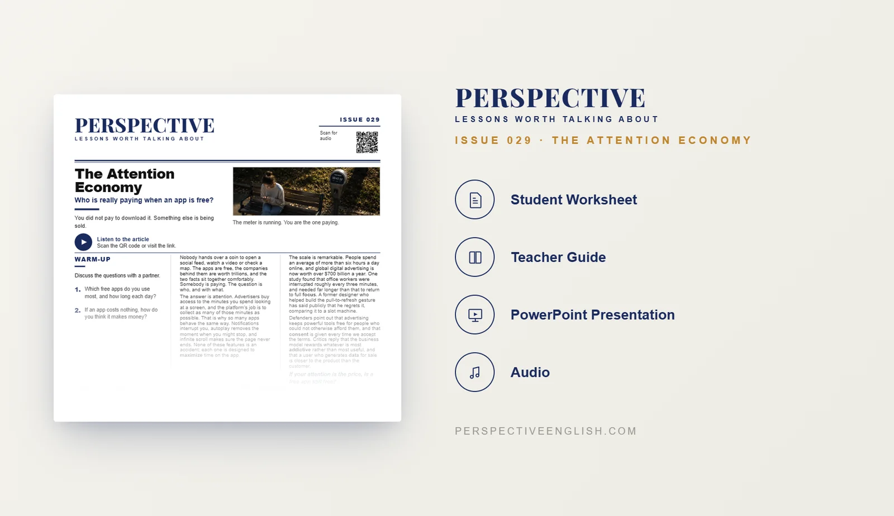

ISSUE 029
Attention Economy ESL Lesson
Who is really paying when everything is free?
A ready-to-teach ESL lesson exploring the attention economy, smartphones, social media, screen time, algorithms and digital distraction, with reading, listening, vocabulary, discussion and critical-thinking activities for B1–B2 English learners.
CHOOSE YOUR LEVEL
Collection 05 includes Issues 026–030.
LESSON PREVIEW

ABOUT THIS LESSON
About This Attention Economy ESL Lesson
Many of the world's most popular apps cost nothing to download. Social media, videos, games, news and entertainment can all appear to be free. But users give these platforms something extremely valuable every day: their attention.
This B1–B2 Attention Economy ESL lesson explores how technology companies compete for people's limited time. Students examine notifications, infinite scrolling, recommendations, autoplay and personalized feeds, and consider how these features encourage people to keep watching, clicking and returning.
The lesson combines an original reading and audio with vocabulary, comprehension, discussion questions and critical-thinking activities. Students use English to discuss smartphones, social media, screen time, algorithms, digital distraction and whether we are really choosing how we spend our attention.
FROM THE ARTICLE
WHAT'S INCLUDED
What's Included in the Attention Economy Lesson?
- Magazine-style B1–B2 ESL student worksheet
- Original attention economy reading and audio recording
- Five vocabulary items and true-or-false reading comprehension questions
- Five discussion questions about apps, screen time, notifications and digital distraction
- Design Audit critical-thinking activity: decide whether six app features help or hold the user
- Language in Context practice with key vocabulary from the article
- App-design speaking challenge: create a time-respecting app and explain how it will make money
- 150–200 word opinion-writing task: Are we the customers, or part of the product?
- Teacher guide and complete answer key
- Ready-to-use classroom presentation
GET THE COMPLETE LESSON
Ready to Teach The Attention Economy?
Get the complete Attention Economy ESL lesson individually or save with Perspective Collection 05.
Secure checkout and instant digital delivery through Payhip.